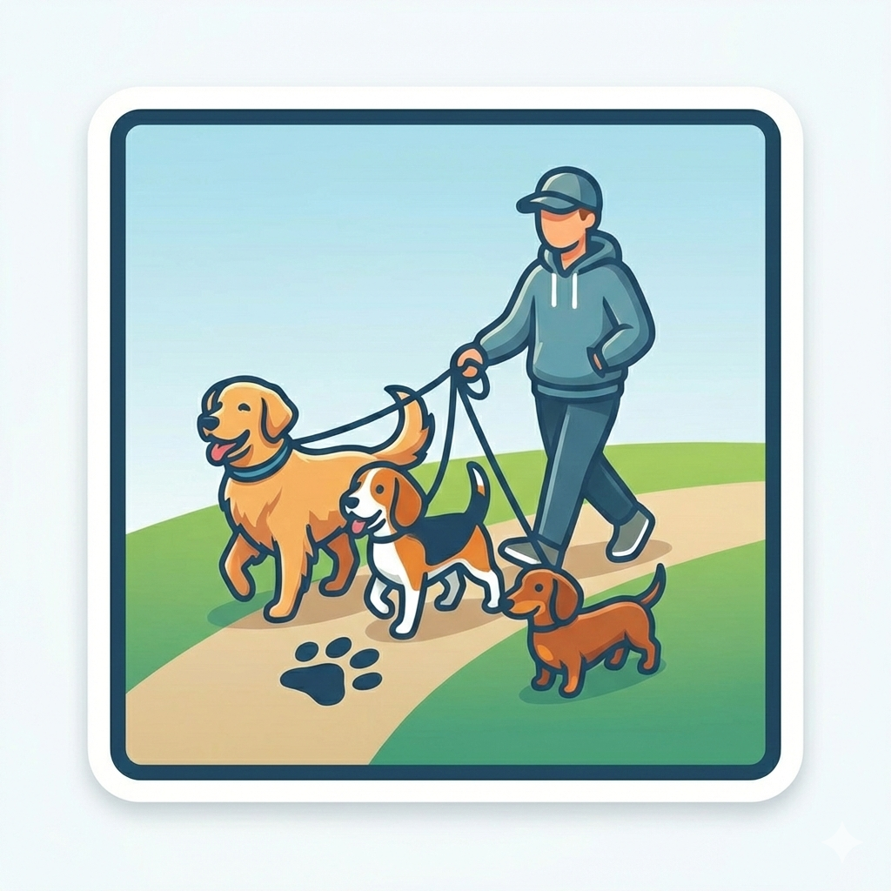

Paseos
- Número de mascotas: Máximo 6 mascotas.
- Modalidad de paseo: Grupal o Individual.
- Días en la semana: Puedes elegir los días que prefieras.
- Duración del paseo: Desde 30 minutos, 1 hora, 2 horas. Máximo 3 horas.

Para tu seguridad y tranquilidad en tiempo real visualizarás el recorrido del paseo de tu mascota y en cualquier momento podrás tener comunicación con el paseador. Cuando el paseo finalice te enviaremos un reporte general del trayecto, distancia y tiempo.
La forma económica para pasear tu perro, desde $6,320 obtendrás media hora de paseo y tu mascota estará con máximo 5 perros más.
Si deseas toda la atención para tu mascota, y quieres que el paseador realice una ruta en específico esta será la mejor opción.
Todos nuestros paseadores han pasado por un filtro de seguridad, en el cual se verifican antecedentes judiciales y procuraduría.
Actividad en tiempo realPodrás ver la ruta del paseador en la App.